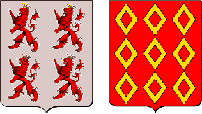

Le clerc de Rohan
The Clerk of Rohan
Dialecte de Cornouaille
|
Cette indication tirée du Barzhaz, édition 1845, tome I, page 285 est évidemment reprise de la "Table B" rédigée par Mme de La Villemarqué où l'on peut lire: "Le Marquis de Rohan qui jette sa femme par la fenêtre: chanté par Marie Tangui de Kerlan en Névez, il y a 64 ans". Marie Tanguy était alors la bonne de la jeune Mme de La Villemarqué. On peut en déduire, puisqu'il est probable que la table B, la plus ancienne, date de 1844, que c'était en 1780 et que la petite fille, née en 1776, avait alors 4 ans. Dans la table A la ligne "Le Marquis de Rohan qui jette sa femme par" est rayée. Mais les lignes qui précèdent indiquent qu'un autre chant, "Les miroirs d'argent" lui fut chanté par la même Marie Tanguy en 1780. La chanteuse dont il s'agit est Marie Tanguy, épouse Le Bourhis (1725 - 1803), de Kerlan en Névez, ou Lustuminy en Nizon. (Cf. aussi Les miroirs d'argent ). On ne sait trop pourquoi, Francis Gourvil considère comme impossible qu'une enfant de quatre ans éprouve une émotion musicale si vive qu'elle s'en souvienne 60 ans plus tard. Il feint de comprendre que c'est dès cet âge qu'elle fit une copie de la ballade et ajoute: "Il serait cruel d'insister sur un tel point..." - par Mme de La Villemarqué, sur son "cahier de recettes" , "Merc'hig koantig deus-a Vrehan" (Nizon, 1834?); - par De Penguern, t. 111, p. 227, "Markizez Du Gange"; - dans la collection Lédan IV: "Gwerz ar Varkizez De Gange"; - par Luzel, sous forme manuscrite: MS 16 (Q) "Markizez Degange" (Plouaret, 1849); MS 1021 (R) "Markizez Degangé" (Duault); MS 1022 (R) "Markizez Deganger"; MS 1023 (R) Markizez Ducange (Ploulec'h, 1849), et , publié dans ses "Gwerzioù", t. 1, "Markizez Degangé" (Plouaret, 1855, Île de Batz, 1854); - dans la collection Lamer, Ms 1024 (R): "Markizez Degange" (Ploumiliau, 1854); - par Laborderie, Ms 43680 (R), "Gwerz Markizez Ducangé"; - par Milin dans la revue "Gwerin" 1, "Gwerz Radegond, Penn-herez Roc'han" |
 De g. à d.: Armes des Beauvau et des Rohan |
This is an excerpt from the 1845 edition of the Barzhaz, Book 1, page 285 which was evidently derived from the "Table B" set up by Mme de La Villemarqué who stated: "The Marquis de Rohan who threw his wife out of the window: sung by Marie Tangui from Kerlan near Névez, 64 years ago." Marie Tanguy was then maid to young Mme de La Villemarqué. We may infer that Table B, the older one, dates from 1844; that it was in 1780 and that the little girl, born in 1776, was 4 years old at the time. In table A the line "The Marquis de Rohan who throws his wife" is crossed out, but the previous lines state that Marie Tanguy sung to her the "Silver mirrors" in 1780. The singer in question is Marie Tanguy wife of Le Bourhis, (1725 - 1803), from Kerlan near Névez or Lustiminy near Nizon. (See also The Silver Mirrors ). For some reason or other, Francis Gourvil considers it impossible that a four year girl should experience so keen a musical emotion that she remembers it 60 years later. He pretends to understand that it was back then that she made a copy of the ballad and adds: "It would be cruel to lay stress on this point..." - by Mme de La Villemarqué, in her "recipe book" , "Merc'hig koantig deus-a Vrehan" (Nizon, 1834?); - by De Penguern, t. 111, p. 227, "Markizez Du Gange"; - in the Lédan collection IV: "Gwerz ar Varkizez De Gange"; - by Luzel, as MSs: MS 16 (Q) "Markizez Degange" (Plouaret, 1849); MS 1021 (R) "Markizez Degangé" (Duault); MS 1022 (R) "Markizez Deganger"; MS 1023 (R) Markizez Ducange (Ploulec'h, 1849), and , published in his "Gwerzioù", t. 1, "Markizez Degangé" (Plouaret, 1855, Island Batz, 1854); - in the Lamer collection, Ms 1024 (R): "Markizez Degange" (Ploumiliau, 1854); - by Laborderie, Ms 43680 (R), "Gwerz Markizez Ducangé"; - by Milin in the periodical "Gwerin" 1, "Gwerz Radegond, Penn-herez Roc'han" |
Ton
(Mode Hypodorien)
| Français | English |
|---|---|
|
1. Seule héritière des Rohan, hélas!
|
There was to the house of Rohan No daughter left but she alone. 2. When she was twelve or thirteen years, To choose a husband she agreed. 3. She agreed to become the bride Of a baron or of a knight, 4. To choose among knights and barons, Who came on visits to her home. 5. No one pleased her among these few, Except the bold Baron Matthew, 6. The squire of Beauvau only, A mighty man from Italy. 7. Won her heart by his loyalty His righteousness and courtesy. 8. The happiness of the two has Lasted for three years and a half, 9. A call to join in a crusade In the Orient to all was made. 10. "Since I am of highest degree, The first to go I must needs be. 11. And therefore, my cousin, I must Now my dear wife to you entrust. 12. To you my wife and son entrust: Good clerk. take good care of them both! " 13. Early next morning, when he left Well mounted, well equipped and deft, 14. The lady, suddenly, in tears Was seen, as she rushed down the stairs. 15. Sobbing, the lady good and mild And bearing in her arms their child. 16. She came, as everyone could see, Near her husband and hugged his knee. 17. How she grasped and held on fast His knee that in her tears she bathed! 18. - O my dear lord, O my own one, In God's name, don't leave me alone! - 19. The lord looked at her tenderly And he reached her his hand fairly. 20. He lifted her up off the ground In his arms and sat her in front. 21. On his horse and he endeavoured, Kissing her fondly, to cheer her. 22. - Do stop crying, my Jenny dear, You know I'll be back in a year. 23. Then he lifted the baby up That sat upon its mother's lap. 24. He hold it tight in his strong arm, Was held by it, under a charm! 25. - My son, you shall, when you're of age, Follow your father and war wage. - 26. And when he rode out of the yard, Everybody was crying hard. 27. Young and old alike cried a lot All, except the clerk who did not. II 28. The perfidious clerk was saying To the young lady, one morning. 29. - The year now has come to an end. So has the war, I understand. 30. The war must to an end have come Yet your husband does not come home. 31. Answer me, my lady sister, How the odds are, did you ponder? 32. Is it in fashion for women To widow their living husbands? 33. - Be silent, be silent wretched clerk! Full of abject sin is your heart! 34. You would, if he were in this house, Get a good thrashing from my spouse. - 35. The nasty clerk when he heard it Went to the kennel in secret, 36 Where he found his master's greyhound: And with his knife he cut its throat. 37. And once the poor greyhound was killed Into its blood he dipped his quill, 38. And wrote a letter right away To his master in the army. 39. And the letter read as follows: "Your wife, dear lord, is in sorrows, 40. " Such deep sorrows did your dear wife Never experience in her life. 41. " While doe-hunting her horse has run Over and killed your fawn greyhound." 42. The baron read through the letter And he gave at once this answer: 43. "Tell my wife she should not worry Since we still have enough money, 44. " What does it matter if my fawn Greyhound died? I'll buy a new one. 45. " Yet she should avoid doe-hunting That's for stag-hunters confusing. " III 46. Nefarious as he was, again The clerk returned to woo the dame. 47. - What is the use of your wasting Your good looks with ceaseless crying? 48. - For my good looks I do not care. As long as my lord is not there. 49. - I think it's time to plan ahead: Again he's married or he's dead. 50. The Orient is a country which Has girls that are both nice and rich. 51. They know there nothing but warfare. That's why so many will die there. 52. If he's remarried, let's him curse! If dead, forget him. No remorse! 53. - I'll die, if he marries again. If he dies I shall die in pain. 54. - No one burns a chiselled chest just Because the key to it is lost. 55. And I consider a new key Better than one old and rusty. 56. - Be gone, be gone, immodest clerk! Wrong lust with your tongue is at work! 57. When with that rebuff he had met, The clerk stole to the stable yet. 58. And he found his master's horse there, In all the land beyond compare. 59. Its hide, like an egg white and smooth, With bird-like gait and fiery foot, 60. It never ate another food Than crushed gorse or barley stewed. 61. He pondered on it for a while And then he stabbed it with his knife. 62. When the unhappy horse was dead He wrote a new letter that read: 63. "A new misfortune befell us, Here in the castle, (don't be cross!) 64. "As she came from a night party, Your horse broke its legs suddenly." 65. The baron wrote: "How can it be That my horse died so abruptly? 66. " My horse is dead! My hound is dead! Earnest word to her must be said! 67. " Yet, don't scold her, cousin, for it But she must give up such frolics 68. " As make not only horses' legs, But marital unions need pegs." IV 69. Soon afterwards it happened that The bad clerk resumed the combat: 70. - Now you are going to comply With my wish, Madam, or you die! 71. - I prefer, aye, a thousand times, To die, rather than commit crimes. - 72. Hearing these words the lustful snake Feels a wrath that him overtakes: 73. He unsheathes his dirk and flings It at the head of the poor being. 74. But the white angel of the dame Dodged the knife that hit a glass pane. 75. The poor woman took to her heels And locked the door behind her well. 76. He picked up his dirk at one bound, Furious like a rabid hound. 77. He rushed downstairs for a new crime, Two steps or three steps at a time. 78. And to the nurse's room went straight Where the child in its cradle slept. 79. In it the child by its lone slept Its arm hanging out of the bed. 80. With one small arm out of the bed, The other bent under its head, 81. Its little heart uncovered laid... Alas! Sour tears, mother, you'll shed! 82. Upstairs, in black and red he wrote For his master, straightway, a note. 83. Yes, he wrote, the dastardly loon, "Hurry up, lord, and return soon! 84. " Come to the manor hastily To put here things straight and tidy! 85. " Your hound was killed, so was your horse, Now I complain of something worse, 86. "You will, too, when this note you've read: Your little boy, alas!, is dead! 87. "The big sow has devoured it all While your wife was gone to a ball, 88. "With her sweet-heart, the miller who Acts here as her rose gardener, too. " V 89. The note was handed to the knight Who had fought the ultimate fight. 90. And was merrily coming home With beating drums and sounding horns. 91. As he went along the letter The knight he flared up with anger. 92. When he had read it to the end, He has screwed it up in his hands, 93. Then with his teeth to pieces torn, And thrown for his horse to tread on. 94. - Hurry up, squire! To Brittany! Or I shall stab you presently! - 95. When to his home he came, the lord Knocked three times at the yard door. 96. Three hits he made with the knocker. All were upset in the manor 97. The clerk heard the knocks on the floor And rushed down at once for the door: 98.- Accursed clerk! You pledged your life! I entrusted to you my wife! - 99. He drives his lance into his throat, Down to his neck, all the way through. 100. He rushes up the flight of stairs Into his wife's room he repairs. 101. Before she could utter a word He had slain her with vengeful sword. VI 102. - Reverend priest, will you tell me, In the manor, what did you see? 103. - I saw... I saw a distress such As may be found nowhere on earth: 104. I saw, a poor martyr who died. Her rueful slayer nearly expired. 105. - Reverend priest, of things so sore At the crossroads did you see more? 106. - I saw some putrid carrion That by dogs and ravens was torn. 107. - What did you see in the churchyard, When it was lit by moon and stars? 108. - I saw a lady clad in white, Sitting on a new grave, that night, 109. With a fair child upon her lap Whose heart was pierced by a stab. 110. To her right stood a fawn greyhound. To her left a charger was bound. 111. The throat of the former was cut. From the latter's chest sagged the guts. 112. Both of them held forward their heads To lick her hands and to be fed. 113. She did stroke them alternately And she smiled to them so mildly. 114. And her son, jealous, as it were, With his little hand did stroke her. 115. And when the full moon came to set, There was to be seen nothing left, 116. But I heard the bird of the nights Singing the song of paradise. Transl. Christian Souchon (c) 2008 |
Cliquer ici pour lire les textes bretons (versions imprimée et manuscrite).
For Breton texts (printed and ms), click here.

|
Résumé
Le clerc de Rohan profite de l'absence de Mathieu de Beauvau pour faire des avances à sa femme Jeanne qui le repousse. Pour se venger, il tue le lévrier du seigneur et dans une lettre qu'il lui adresse en impute la faute à son épouse. Il renouvelle, avec le même insuccès, ses tentatives de séduction puis poignarde le cheval blanc du seigneur, perte dont il rend à nouveau la dame responsable. Troisième tentative, troisième refus: le clerc essaye de frapper la dame de son poignard mais celle-ci l'évite et s'enfuit. Alors le criminel immole l'enfant dans son berceau et à nouveau annonce au père cette mort dont il accuse la châtelaine. Le baron revient au château, commence par enfoncer sa lance dans la bouche ouverte du clerc pour le punir d'avoir si mal surveillé sa femme, puis transperce cette dernière de son épée. Au cimetière, à la clarté de la lune et des étoiles, on vit une dame vêtue de blanc, assise sur une tombe nouvelle, un bel enfant sur ses genoux, le cœur percé de part en part. A sa droite, un lévrier fauve, un coursier blanc, à sa gauche: le premier la gorge coupée, le second, le poitrail percé; et ils allongeaient la tête et ils léchaient ses mains douces, et elle les caressait l'un après l'autre en souriant, et l'enfant, comme s'il eût été jaloux, caressait lui-même sa mère. Puis la lune se couche, et l'on ne voit plus rien, mais, dit le narrateur: "J'entends le rossignol de nuit Chanter le chant du paradis." "M'am-eus klevet an eostig-noz O kana gwerz ar baradoz" Les éléments de départ Cette version du chant est assez proche de la précédente où le nom du mari assassin n'est pas cité, si ce n'est qu'ici la demoiselle de Rohan refuse de se marier... "Ken a zeue Markiz Cangé, Un den reputet e kontré" (jusqu'à ce que paraisse le marquis de Cangé , Un homme réputé dans cette contrée.) Au bout de trois ans, celui-ci doit partir combattre et confie son épouse à son frère Ponce-Pilate. Indignée par les avances que lui fait celui-ci, la dame écrit à son mari, mais Ponce-Pilate la devance et écrit qu'il s'est passé quelque chose à l'écurie. Cangé revient et massacre ses enfants et tous les gens de sa maison, en commençant par le garçon d'écurie. La dame écrit avec son sang à sa belle-mère, implorant son intervention. Le forcené ne l'écoute pas, commande à sa femme de monter dans la chambre blanche où il l'immole à son tour. La malheureuse monte au ciel et le marquis de Cangé ainsi que Ponce-Pilate savent qu'ils sont damnés. Le texte de La Villemarqué Outre ces deux manuscrits, sur un groupe de feuillets rajouté au cahier postérieurement à 1839, on trouve une troisième version (version C) qui n'est autre que celle publiée dans la deuxième édition du Barzhaz, celle de 1845, à quelques variations près. Il manque en particulier les huit premières strophes et une douzaine d'autres couplets (52 à 63). M. Donatien Laurent qui s'est attentivement penché sur ce texte, conclut qu'il ne s'agit pas d'une notation de terrain, mais d'une version, encore provisoire, d'un texte élaboré par La Villemarqué à partir de l'histoire de la Marquise de Cangé. "Il y a là", écrit-il (page 310 des "Sources"), "toute une imagerie "moyenâgeuse, des attitudes, des gestes, qui sont trop accordés avec l'esthétique des années 1830, pour ne pas nous mettre en éveil". Ce sont ensuite des arguments d'ordre graphique, linguistique et stylistique qui emportent sa conviction: Erreur ou supercherie? Dans l'"argument" qui précède ce chant dans l'édition de 1867, La Villemarqué écrit: "[Ma] mère entendit chanter au siècle dernier plusieurs couplets...à une vieille femme de la paroisse de Nevez et...elle en fit une copie à l'aide de laquelle a été retrouvé le chant tout entier". Il faut donner au mot "retrouvé" un sens bien large pour accepter cette présentation des faits. "Inventé" serait en l'occurrence plus exact. La malheureuse victime du drame avait été mariée une première fois à treize ans à un Marquis de Castellane, puis en secondes noces au Marquis de Ganges, seigneur de Lanide qui habitait avec ses deux frères un château au pied des Cévennes, près de Montpellier. Elle bénéficia de l'éducation soignée évoquée dans les versions authentiques de la ballade et parut à la cour du roi Louis XIV qui fit danser plusieurs fois "la Belle Provençale". On possède d'elle un portrait de Pierre Mignard. Si cette histoire eut tant de retentissement, c'est en raison de la personnalité de la victime, qui, comme le suggère la version A de la ballade bretonne, avait vécu à la Cour jusqu'à la mort de son premier mari, le Marquis de Castellane, officier des galères, qu'elle fut appréciée du roi et amie de Mme de Sévigné qui parle d'elle dans une de ses lettres. C'est aussi parce que la famille de son second mari, Charles de Vissec de Latude, comte puis marquis de Ganges, était l'une des plus anciennes du Languedoc. Génèse du chant du Barzhaz La Villemarqué s'est engagé dans une fausse voie, pour avoir concentré son attention sur deux noms qui lui étaient fournis par ses manuscrits: Rohan et Tronjoly. Dans son "La Villemarqué" (1960), page 437, Francis Gourvil prend un malin plaisir à essayer, sans être absolument convaincant, de démontrer la fragilité de cette construction: Le "Dictionnaire de la Noblesse" (t. II, 1776), à l'article "Beauvau" mentionne bien un Mathieu époux d'une Jeanne de Rohan dont on ne donne pas l'ascendance...Ce Mathieu vivait encore en 1281; il eut de sa femme trois enfants et fut enterré auprès d'elle...Or le drame relaté dans le "Clerc de Rohan" se serait déroulé en 1241." Dès lors le Barde était fondé à "restaurer" le chant historique en introduisant les prénoms de Jeanne et de Mazé, ainsi que l'allusion à l'origine italienne de ce dernier. Puis à dater leur mariage de 1236, trois ans et demi avant le départ à la Croisade de 1239, sous la bannière de Pierre Mauclerc... Postérité littéraire de la tragédie de Montpellier Cette histoire n'a pas intéressé que les poètes populaires. Si Sade a trouvé dans cette histoire un sujet qui réveillait ses fantasmes, vertu bafouée, multiplication de situations terrifiantes, "sadisme" des criminels, pied de nez aux belles âmes, comme l'écrit Raymond Trousson , le 10 février 1996, dans une présentation à l'Académie royale de langue et littérature française de Belgique "Ni l'un ni l'autre des deux derniers auteurs n'ont conféré profondeur ou authenticité à des personnages qui demeurent des marionnettes sans existence propre". Peut-être, l'émouvant poème de La Villemarqué, avec sa scène des adieux avant le départ pour la croisade, sa progression dramatique dans la vengeance du clerc et sa transfiguration finale dans le cimetière, comble-t-il, à l'insu de son auteur, cette regrettable carence! |
Résumé
The clerk of Rohan takes advantage of Matthew de Beauvau's absence to make advances to his wife Jean who repels them. To take vengeance, he kills the Lord's greyhound and ascribes the fault to his wife in a letter he sends him. He repeats his attempt of seduction with the same result and consequently stabs the Lord's white horse, a lost for which again he makes the lady responsible. Third attempt, third refusal: the clerk tries to hit the lady with his dagger but she dodges the hit and runs away. Now the criminal slays the child in its cradle and again informs the father of this death with which he charges the lady. The baron returns to the castle and plunges at first his lance into the open mouth of the clerk to punish him for having so badly looked after his wife whom he then stabs with his sword. In the graveyard, in the dim light of the moon and the stars, a lady was seen, clad in white, sitting on a new grave, with a charming child on her knee, whose heart was pierced right through. To her right a red greyhound, a white charger to her left: the former had its throat slit, the latter its breast pierced; and they stretched their necks to lick her soft hands and she stroked them, smiling. And the child, as if it had been jealous, was fondling its mother. When the moon set, all vanished, but, says the narrator: "I heard the warbler of the night Singing the chant of paradise." "M'am-eus klevet an eostig-noz O kana gwerz ar baradoz" The sources It is rather similar to the foregoing which does not name the criminal husband. Here, on the contrary, the young Lady de Rohan was reluctant to marriage... "Ken a zeue Markiz Cangé, Un den reputet e kontré" (Till marquis Cangé came forth, Who was a man of high repute." Three years later, the marquis must go to war and entrusts his wife to his brother Pontius Pilatus' care. Revolted by the latter's advances, the lady writes a letter to her husband, but Pontius Pilatus has anticipated that she would and written of a horrible incident that took place in the stable. Cangé comes back and slaughters his children and all those living in his house, starting from the stable lad. The lady writes with her own blood a letter to her mother-in-law, imploring her intervention. But the fiend turns a deaf ear to her entreaties. He orders his wife to go upstairs and stabs her in the white chamber. The unfortunate lady goes to heaven. Hell awaits the marquis and Pontius Pilatus. La Villemarqué's composition In addition to those two MS, on a leaflet attached after 1833 to the notebook we find a third version (version C) which is no other than the one published in the second edition of the Barzhaz in 1845 with some minor differences. The first eight stanzas, in particular, are missing, as well as stanzas 52 to 63. M. Donatien Laurent who thoroughly sctrutinized this text has concluded that it was not a record of investigation, but the nearly final draft of a text elaborated by La Villemarqué, using the story of the Marchioness Cangé as a starting point. "We find here" so he writes on page 310 of his book, "a series of medieval clichés, attitudes and proceedings so well attuned to 1830 aestheticism, that we cannot but be defiant". A close examination of the handwriting, the dialect and the style convinced him completely: Error or forgery? In the "Argument" preceding this song in the 1867 edition, La Villemarqué states; "[My] mother heard in the past century several verses sung...by an old woman from the parish Nevez and...made a copy of it which was of help in restoring the whole ballad". "Restoring" must be understood in a very comprehensive way. In the present instance, "inventing" would be more accurate. The unfortunate victim of the tragedy had been married, at first, at the age of thirteen years to a Marquis de Castellane, then to Marquis de Gange, Lord of Lanide who lived with his two brothers in a castle at the foot of the Cévennes Mounts, near Montpellier. She enjoyed the excellent education mentioned in the genuine versions of the ballad and was known at the court of King Louis XIV who danced several times with her as "la Belle Provençale". The painter Pierre Mignard made her portrait. If this story created such considerable stir, it was on account of the victim's personality, who, as evoked in version A of the Breton ballad, had lived at court until the death of her first husband, a galley officer drowned in a shipwreck, the marquis de Castellane. This lady was appreciated by the king and a friend of Mme de Sévigné's who mentions her in one of her "Letters". It also was because the family of her second husband, Charles de Vissec de Latude, Count then Marquis de Gange, was one of the oldest and noblest in Languedoc. How the Barzhaz song was composed La Villemarqué was misled chiefly because he was hypnotized by two names he had found in his MSS: Rohan and Tronjoly. In his "La Villemarqué" (1960), page 437, Francis Gourvil takes a malicious pleasure in attempting, but he is not very convincing, to highlight how shaky this construction is: The "Dictionnaire de la Noblesse" (B. II, 1776), under item "Beauvau", mentions a Matthew who married a Jean of Rohan whose parents are not known...This Matthew was still alive in 1281; he had by his wife three children and was buried by her side...Now, the tragedy hinted at in "Clerk of Rohan" was supposed to take place in 1241." So that the Bard felt justified in "restoring" the historical song the way he did: he introduced the first names Jeanne (Jean) and Mazé (Matthew) with a hint at the latter's Italian origin, dated their wedding from 1236, three years and a half before he took part in the 1239 crusade, under the command of Pierre Mauclerc... Literary aftermath of the Montpellier tragedy This dismal story did not solely interest the authors of folk ditties. Only Sade may be credited with having deservedly worked out this story in his old own way: virtue held up to ridicule, piling up of terrifying situations, "sadistic" behaviours, cocking a snook at those of fierce virtue... As stated by Raymond Trousson , on 10th February 1996 , in a speech to the Royal Belgian Academy of French literature, "Neither of the last named authors has depicted the protagonists of this story in a convincing way. They remain puppets without souls of their owns". Maybe the moving poem by La Villemarqué, with its departure for the crusade scene, the clerk's dramatic vengeance in three acts and the final transfiguration, in spite of its other faults, atones for this regrettable shortcoming, even if its author was unaware thereof! |
Version A du Cahier de recettes de Mme de La Villemarqué
Version A in Mme de La Villemarqué's recipe book
| Français | Français | English | English |
|---|---|---|---|
A: Le Marquis de Rohanqui jette sa femme par la fenêtreTitre donné par Mme de La Villemarqué dans les "Tables" où elle précise que ce chant lui fut chanté en 1780 par Marie Tanguy de Kerlan en Névez. La plupart des vers sont retranscrits par son fils dans une orthographe plus "orthodoxe". 1. Fillette jolie de Bréhan - Il n'y avait d'autre fille qu'elle A être l'héritière de tous leurs "moyens".. 2. Son père vint à comprendre, (L'intérêt de) l'envoyer à Paris Etudier convenablement les sciences académiques. 3. Les sciences académiques et la cadence, Et les beaux discours qui ont cours dans la noblesse. 4. Lorsqu'elle eut douze ou treize ans Elle consentit à prendre époux: Son choix se porta sur un jeune gentilhomme, Un homme vaillant, s'il en fût. 5. Et pendant trois mois durant Les sonneurs de la noce, Firent place à ceux des bals et des danses, Et aux beaux discours de la noblesse. 6. Quand trois années eurent passé Sans que rien ne soit venu troubler leur bonheur, Quand trois années eurent passé, Le marquis reçut une lettre. 7. Dans cette lettre il lui était demandé De partir loin du pays, Pour rejoindre l'armée, Sauf à désobéir au roi. 8. Et quand le marquis partit, Il embrassa tous les gens de la maison. Son épouse et ses enfants, Il les confia à Ponce-Pilate. 9. Il n'avait pas fait deux pas hors de chez lui Que Ponce-Pilate l'entreprenait. 10. - Hors d'ici, maudit Ponce-Pilate! Ton coeur est chargé de péché! Si le marquis était ici Il te briserait les membres! |
11. Ponce-Pilate proclame partout
Que le marquis est déshonoré... 12. Sa mère écrivit de son sang Pour briser la colère de son fils. - Ma pauvre mère, retirez-vous! Je n'ai pas le droit de vous frapper. 13. Mais des lettres circulent partout Disant que je suis déshonoré...- 14. Et quand le marquis arriva, Il massacra tous les gens de sa maison, Sa femme et ses enfants. 15. - Retirez-vous dans la chambre blanche! Je vous y rejoindrai tout à l'heure. - Quand il entra dans la chambre blanche Il lui donna sept coups d'épée. 16. Il lui donna sept coups d'épée. Et la jeta par la fenêtre. Aussitôt le ciel s'ouvrit Et les anges descendirent. ( En français: 17. "De suite, les anges descendent du ciel et la portent sur leurs ailes en paradis Le diable emporte le marquis ... mais j'ai oublié les paroles...") ..." 18. Au manoir de Tronjoli il y eut du chagrin, S'il y en eut jamais sur terre En voyant la dame aller vers la félicité Et le seigneur aller chez les diables. La QuenouillePrêtez-moi votre quenouille, ma commère, (bis)Pour savoir si je saurais filer. Filer, défiler! Sur sa pelote elle dévide. (bis) Sur sa pelote, elle va dévidant. Lai breton: Jannedic |
A: The Marquis de Rohanwho threw his wife out of the window par la fenêtreTitle given by Mme de La Villemarqué in her "Tables of songs" where she claims to have learnt it in 1780 from the singing of Marie Tanguy of Kerlan near Névez. Most of the poem is rewritten between the lines by his son in a more "usual" spelling. 1. Pretty little girl of Bréhan - There was except her No heiress of all their riches.. 2. Her father happened to understand, (That he had to) send her to Paris To properly learn at the academy. 3. Academic knowledge and dancing, And the clever speeches of the nobility. 4. When she was twelve or thirteen She accepted to choose a husband: She chose a young gentleman, A most gallant man, for sure . 5. And during three months The tunes of the wedding pipers Were prolonged by balls and dances, And clever speeches of the noblemen. 6. After three years had gone by Without anything to spoil their happiness, After three years had gone by, The marquis received a letter. 7. In this letter he was requested To go far away, And join the army, Or he would disobey the king's orders. 8. And when the marquis left, He kissed goodbye everybody: His wife and his children And entrusted them to Pontius-Pilatus. 9. Hardly had he taken two steps from home When Pontius-Pilatus came to woo her. 10. - Off with you, accursed Ponce-Pilate! Whose heart is brimming with sin! If the marquis were here He would break your limbs! |
11. Pontius-Pilatus proclaims everywhere
That the marquis is dishonoured... 12. The marquis' mother wrote with her blood A letter to soothe her son's anger. - My mother , please, get out of it, Since I have no right to slap you. 13. But letters circulate all around Maintaining that I am dishonoured...- 14. And when the marquis turned up, He slaughtered all the household, His wife and children inclusively: 15. - Go up to the white room! I'll follow you there presently. - When he entered the white room, He stabbed her seven times with his sword. 16. He stabbed her seven times And threw her out of the window. Immediately the heavens opened And angels drew near. ( In French: 17. "Presently angels drew near And bore her on their wings to paradise. But the devil carried away the marquis. ... I have forgotten here the lyrics...") ..." 18. At Tronjoli manor was such grief, As never was upon the earth, When the lady was on her way to heavenly bliss And the lord to the devils. The distaffLend me your distaff, my neighbour, (twice)That I may try to spin. To spin, to unthread! Unto the wool ball she unthreads. (twice) Unto the ball she is unthreading. Breton lay: Jannedic |
Version B du carnet N°1 de Keransquer
Version B in the Keransquer collecting book N°1
| Français | Français | English | English |
|---|---|---|---|
|
1. Je n'étais qu'une petite enfant
Quand je fus abandonnée toute seule Dans le grand manoir de Rohan. 2. Jusqu'à ce que mes parents en viennent à consentir ...études ...académie ...cadence, Apprendre à parler avec tout gentilhomme. 3. Le père alors fut approché Par des gentilhommes et des barons, Mais il les refusait tous. Jusqu'à ce qu'arrive le marquis de Cangé , Homme réputé de la région. 4. Celui-là, il n'osa l'éconduire De crainte qu'il ne soit fâché. 5. Trois ans et demie dura Le bonheur des deux époux. 6. Quand il plut à sa majesté De lui écrire de venir à l'armée. 7. Il lui fallut partir le premier Puisqu'il était du sang le plus noble - - Ah, hola! mon frère Ponce-Pilate, Je te donne la charge de mon épouse De mon épouse et de mes enfants Au nom de Dieu aie soin d'eux! - 8. Ponce-Pilate... 9. - Dites-moi, madame ma soeur, Que vous inspire votre coeur? 10. La dame écrivit une lettre Pour dire au marquis de revenir Mettre de l'ordre dans son manoir. 11. Ponce-Pilate écrivit avant elle Pour dire qu'elle avait () à l'écurie. |
12. Quand la lettre lui arriva
Il y avait un très grand combat. Tandis qu'il lisait la lettre, Sa colère devenait de plus en plus grande. 13. Quand le Marquis de Cangé arriva chez lui, Il massacra tous les gens de la maison, Son épouse et ses enfants Il massacra tous les gens de la maison, A commencer par le garçon d'écurie. 14. La dame écrivit de son sang Pour dire à sa belle-mère de venir vite Pour calmer la colère de son fils. - Je t'ai porté pendant neuf mois, Je t'ai nourri de mon sein; 15. Et tu me fais encore l'honneur D'insulter tous les gens de ta maison! 16. - Ma pauvre mère, retirez-vous! Je n'ai pas le coeur de vous frapper Je n'ai pas le coeur de (). 17. Et vous, madame, retirez-vous Dans la chambre blanche ce soir pour coucher! - Dans la chambre quand il arriva Il lui donna sept coups (d'épée?). 18. Quand la dame allait "aux joies" Le marquis de Cangé allait aux diables: - Malédiction sur toi, Ponce-Pilate! Tu es la cause de mon péché En écrivant de fausses lettres. Et nous voilà damnés tous deux! -
On la trouve dans le carnet de collectes, sur un groupe de feuillets rajouté postérieurement à la publication du premier Barzhaz en 1839 (pages 229-230, 247-252 et 225-226). Il s'agit non pas d'un relevé de collecte, mais d'une ébauche presque définitive du texte qui sera finalement publié.
|
1. I was but a little child
When I was left all alone In the big manor Rohan. 2. Until my parents were made to accept ...studies ...academy ...cadence, Learn to discuss with high noblemen. 3. Her father was the approached By noblemen and barons, But they were all of them turned down. Until the marquis de Cangé came, A man who was famous in the country. 4. This suitor he durst not turn down Lest he would feel his anger. 5. For three years and a half lasted The couple's happiness. 6. But it pleased His Majesty To write him he might join the army. 7. He had to go first Because he was highest ranking in the family - - Ah, hello! my brother Pontius-Pilatus, I entrust you my wife My wife and my two children In God's name take care of them! - 8. Pontius-Pilatus... 9. - Tell me, my lady sister-in-law, What is your heart up to? 10. The lady wrote a letter Urging the marquis to come back home And put things straight in his manor. 11. Pontius-Pilatus wrote before she did Stating thet she had () in the stable. |
12. When the letter was handed out to him
There was a big fight. While he was reading the letter, He became angrier and angrier. 13. When Marquis de Cangé arrived at home, He slaughtered everybody in the house, His wife and his children He slaughtered everyone in the house, Beginning from the stable lad. 14. The lady wrote with her blood To her mother-in-law that she might come quickly And soothe his anger. - I bore you for nine months, And you suckled at my breast; 15. And nevertheless you make so bold As to insult the people in my household! 16. - Mother I beg you to withdraw! It would break my heart to strike you It would break my heart to (). 17. As to you, my lady, repair To the white room where you will sleep tonight! - He entered the white room And he stabbed her seven times (with his sword?). 18. When the lady went to heaven's bliss The Marquis de Cangé went to the devils: - Curse on you, Pontius-Pilatus! You are the reason why I sinned When you wrote untrue letters. And we are damned, the both of us! -
Is to be found in the collecting book, on a ream of sheets appended to it, after the first Barzhaz was published in 1839 (pages 229-230, 247-252 and 225-226). This is not the record of a collected song, but the almost final draft of the text that will be published eventually.
|